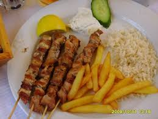
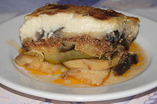

Antik Konyha



A görögök már kereskedtek is a borral és az olívaolajjal, de főzési módszereik egyszerűnek mondhatóak, hiszen életük és napjaik nagy része a házfalakon kívül telt. A rómaiaknál változatos étrendet, kifinomult ízlést figyelhetünk meg. Sokféle háztartási eszközt és nyersanyagot használtak.